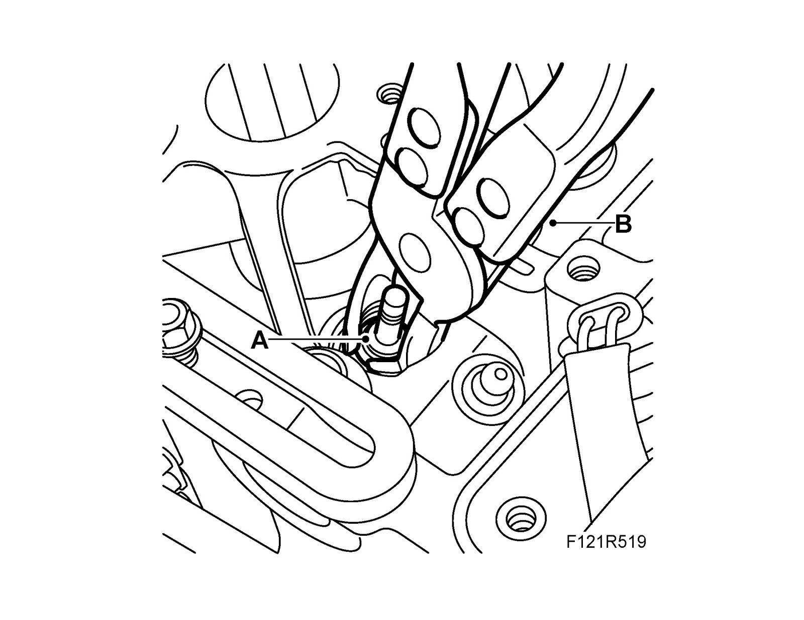

Valve Guide Seal: Service and Repair
Valve guide sealTo remove
1. Remove the valve spring.
2. Lift out the valve guide seal (A) with 83 94 157 Pliers, valve guide seal (B).

To fit
1. Clean all parts and check contact surfaces and bearing surfaces for wear.
2. Fit the valve guide seal (A) with (B) 83 94 157 Pliers, valve guide seal.
3. Fit the valve spring.